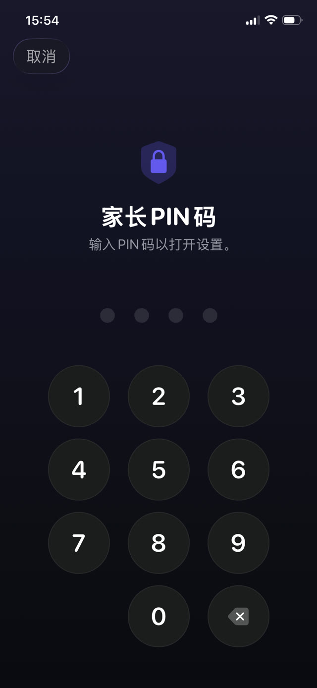

下面先讲设置本身，再讲那些门，最后讲怎么关上它们。


内置的做法：Apple 屏幕使用时间
在孩子的 iPhone 上操作，或者如果那台设备在你的家人共享群组里，也可以从你自己的设备操作：
- 打开「设置」，点按「屏幕使用时间」。
- 点按「内容和隐私访问限制」并打开。
- 用「App 限额」限制类别或单个 App，用「停用时间」设定只有你允许的内容才能运行的时段。
- 设置一个与手机解锁密码不同的屏幕使用时间密码，不要用生日。
- 在「内容和隐私访问限制」中，禁止更改密码和账户设置。
孩子真正会找到的漏洞
这些都不需要技术能力，全都会在学校里传开：
- 删掉再重装。绑定到某个具体 App 的限额，只要删掉再下载一次就能绕开，除非你同时限制了安装 App。
- 浏览器。锁住 TikTok 或 YouTube 的 App，如果 Safari 还能打开同一个网站，那就等于没锁。请锁定整个类别，或者一并限制网页内容。
- 改时钟。调整设备的日期和时间可能会扰乱限额，除非你锁定了日期与时间设置。
- 看你输入。密码被人从肩后看会的次数，远多于被猜出来的次数。
- 「请求更多时间」。如果批准在你手机上只是一次点按，你就会在分神时批准，限额也就没了。
时间限制更深层的问题
即使是密不透风的设置，也有一个设计上的缺陷：时间用完时，唯一发生变化的是你的孩子现在很无聊，而且在生你的气。锁定制造了一段空白，填补它的要么是一场谈判，要么是一个绕行办法。
所以更耐久的做法不只是锁定，还会在锁的另一侧放上一件事。App 并没有消失，它们在一件值得去做的事情后面。
有目的的锁定
Guardian Reader 底层用的是同一套 Apple 屏幕使用时间，所以锁定是在操作系统层面执行的，而不是靠浏览器扩展或一个随手就能删掉的描述文件。不同之处在于什么能解开它。
孩子不再是等一个计时器走完，而是扫描一本纸质书的书页，然后连着朗读出来。App 会把这次朗读与扫描到的文字核对，再放出你设定的分钟数。它们用完后，被锁的 App 会自动重新锁上。
如何设置
- 在孩子的 iPhone 上安装 Guardian Reader 并打开。
- 看到提示时允许访问屏幕使用时间，这是 Apple 自己的权限。
- 选择要锁定的 App 或类别：游戏、YouTube、TikTok、社交，或者全部。
- 设定每次朗读的页数和赚得的分钟数。
- 创建一个家长 PIN。它与手机密码和面容 ID 都是分开的，因为那台 iPhone 上登记的面孔属于你的孩子。
为什么用 PIN，而不是面容 ID
这个细节比听上去更要紧。在孩子的手机上，生物特征属于孩子，所以任何能用面容 ID 打开的「家长锁」，对他也一样会打开。Guardian Reader 特意只用一个你才知道的 PIN，并在反复输错后锁定。